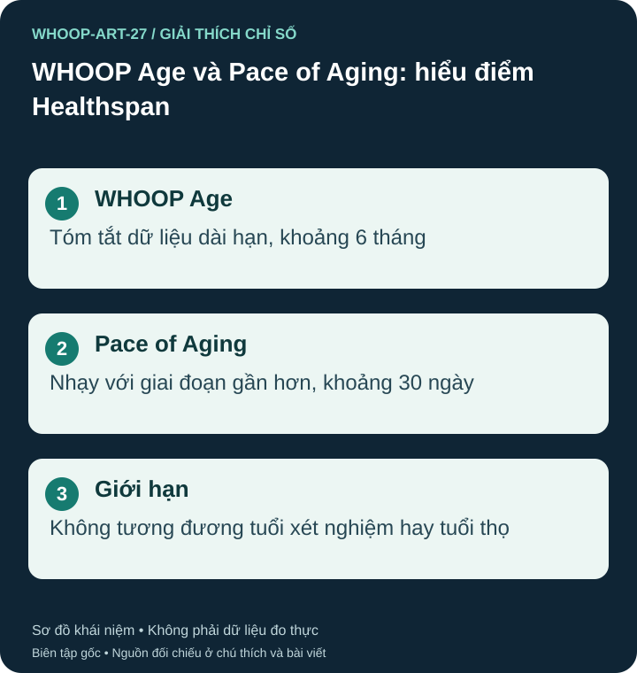

Hai chỉ số trả lời hai câu hỏi
WHOOP Age tóm tắt dữ liệu dài hạn, dùng trung bình khoảng sáu tháng khi có đủ lịch sử; Pace of Aging phản ánh khoảng 30 ngày gần hơn. Không cần chờ đủ sáu tháng mới mở tính năng. Hai chỉ số phản ứng khác tốc độ, nên nghỉ tập vài ngày không bắt buộc làm chúng đổi ngay cùng hướng. S41

Mô hình dùng dữ liệu gì?
WHOOP liệt kê chín đầu vào: giờ ngủ, Sleep Consistency, thời gian vùng nhịp tim 1–3, thời gian vùng 4–5, Strength Activity Time, bước chân, RHR, VO₂ max và khối nạc nếu có. Hai nhóm vùng là hai đầu vào riêng. HRV không nằm trong danh sách Healthspan này; không suy các đầu vào Recovery sang WHOOP Age. S41
Điều kiện mở khác thời gian ổn định
Theo hướng dẫn, Healthspan thuộc Peak/Life, từ 18 tuổi; cần 21 Recovery trong 31 ngày để mở, tiếp tục đạt mức đó trong mỗi khoảng 31 ngày và cần khoảng 90 ngày để hiệu chỉnh đầy đủ. Đây là điều kiện dữ liệu của sản phẩm, không phải xét nghiệm. Khối nạc và thông tin hồ sơ phải đúng nguồn, đơn vị. S41
Đừng nhầm điều kiện VO₂ max với Healthspan
VO₂ max mô tả khả năng sử dụng oxy tối đa khi gắng sức. WHOOP ước tính từ dữ liệu sinh lý và hoạt động; không trực tiếp đo trao đổi khí như kiểm tra phòng thí nghiệm. Hướng dẫn VO₂ max nêu 14 đêm ngủ trong 21 ngày để có ước tính, khác điều kiện 21 Recovery/31 ngày của Healthspan. Giá trị nhập tay nên đến từ đánh giá phòng thí nghiệm; WHOOP cũng nêu ước tính chưa được kiểm định cho thai kỳ. Kiểm tra tính tương thích thiết bị trong ứng dụng thay vì suy rằng mọi thiết bị mở Healthspan đều tự có VO₂ max cùng cách. S51
Không quy điểm thành tuổi thọ
WHOOP nêu chưa có chuẩn đối chiếu lâm sàng cho WHOOP Age/Pace. Theo mô hình, 1x tương ứng WHOOP Age tăng cùng thời gian, 0x gợi ý chỉ số đó đứng yên; không có nghĩa tuổi thật dừng tăng. Điểm thấp hơn tuổi khai sinh hoặc Pace dưới 1x không xác nhận cơ quan trẻ hơn hay tốc độ lão hóa tế bào. S41
Ví dụ, sau khi sửa dữ liệu khối nạc hoặc vùng nhịp tim, điểm đổi có thể do đầu vào, không chứng minh cơ thể trẻ lại tức thì. Duy trì vận động phù hợp có giá trị sức khỏe độc lập với điểm mô hình; không dùng WHOOP Age để loại trừ bệnh hoặc chọn điều trị. S04
Nguồn tham khảo và phạm vi hỗ trợ
- S41 — WHOOP Support. Healthspan: WHOOP Age & Pace of Aging Guide. Phạm vi: 9 đầu vào; WHOOP Age khoảng 6 tháng, Pace khoảng 30 ngày; mở sau 21 Recovery/31 ngày; chưa có chuẩn đối chiếu lâm sàng.
- S04 — World Health Organization. Physical activity. Phạm vi: Vận động tốt hơn không vận động; tập cơ lớn ít nhất 2 ngày/tuần; hoạt động aerobic.
- S51 — WHOOP Support. VO2 Max. Phạm vi: VO2 max ước tính, khác phép đo phòng thí nghiệm; hướng dẫn hiện nêu 14 đêm/21 ngày, cập nhật hằng tuần, không phải đầu vào Recovery; chưa kiểm định cho thai kỳ.
Bài biên soạn độc lập bởi Pulse & Vitality; tài liệu WHOOP và các nguồn khác được dùng để tham khảo. Đăng ngày 2026-10-27; nguồn đối chiếu 2026-10-26. Nội dung giáo dục, không thay thế đánh giá, chẩn đoán hoặc điều trị y tế.